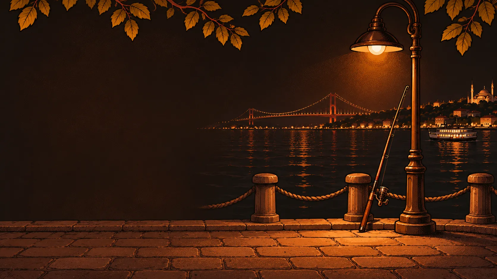
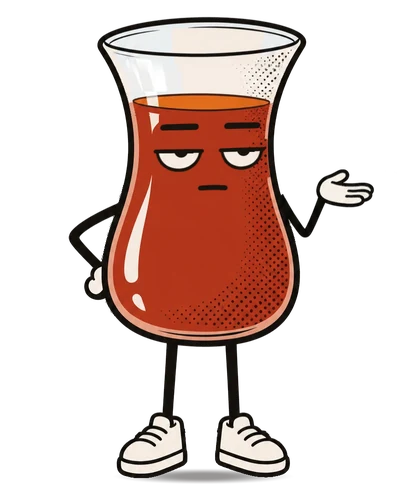

> çay ocağı gazetesi · her 3 saatte taze demlenir
Laboratuvarların ve teknoloji sitelerinin son yapay zekâ haberleri tek sayfada. Kimse dokunmuyor; kendi kendine güncelleniyor.
ADİSYON
ÜCRET · 0 TL

Bu sayfa haberleri listelemek için JavaScript kullanır.